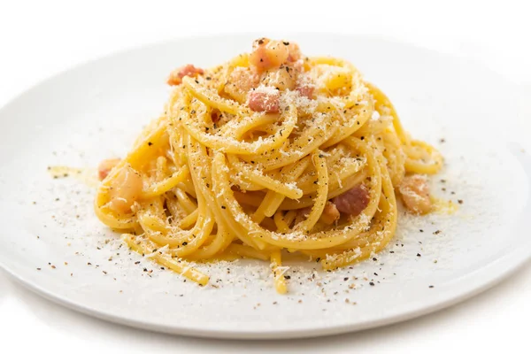

How to cook the traditional italian carbonara

Brief origin story of pasta carbonara
Carbonara is an italian pasta dish. Its origins are obscure but most
sources trace it back to the Lazio region.
The name carbonara first appeared in print in 1950 on the italian
newspaper La Stampa.
It is made of a few ingredients, hence why they have to
be of good quality.
Ingredients
- Spaghetti
- Pecorino Romano
- Guanciale
- Eggs
- Pepper
- Salt
Steps
-
Pour some water in a pot, salt it when it's boiling and throw in the
pasta, it should be ready in 10-15 minutes.
- Put some guanciale in a pan with a low flame
-
Pour three eggs in a bowl, start stirring and pour some cheese and
pepper to make the carbonara sauce
-
Turn off the heat on the pan when the guanciale is crunchy and leave it
on the pan, let the pan cool off a bit
-
When the pasta is ready pour out the water and throw the pasta in the
pan and stir
-
Pour the carbonara sauce on the pan with the pasta and guanciale and
stir
- Pour everything into plates
Back to the Recipes Book